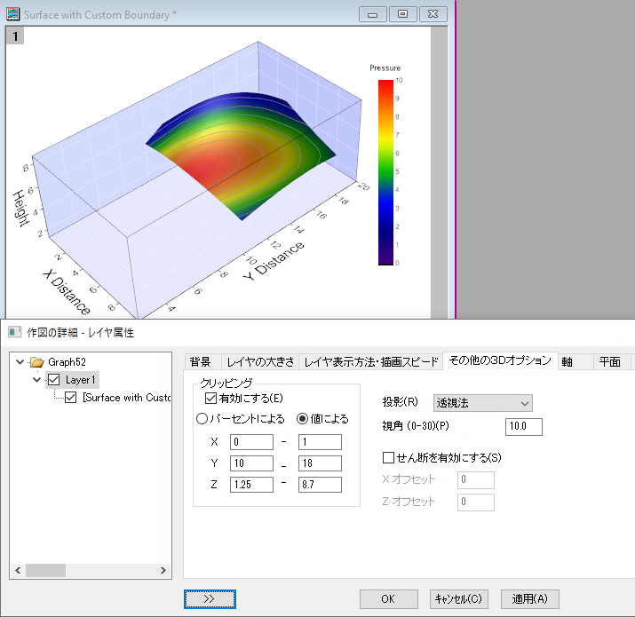

FAQ-172 3Dグラフをクリッピングするには？
3D-Clipping
最終更新日：2023/10/12
OpenGLベースの3Dグラフを現在の軸フレームでクリップするには
- OpenGLベースの3Dグラフウィンドウをアクティブにして、フォーマット: レイヤを選択し、作図の詳細ダイアログボックスを開きます。
- その他の3Dオプションタブを開き、クリッピンググループにある有効にするのチェックボックスにチェックを付けます。
- 必要に応じてパーセントによるまたは値による(Origin 2020以降で利用可) を選択します。
- X、Y、 Zの開始および終了パーセントまたは値を入力します。
- 
3Dクリッピングは3D カラーマップ三点曲面ではサポートされません。
Keywords:3D, クリップ, クリッピング, 余白, 開始範囲, 特定の軸範囲を見る, 軸範囲を特定する
必要なOriginのバージョン: 9.1 SR1以降